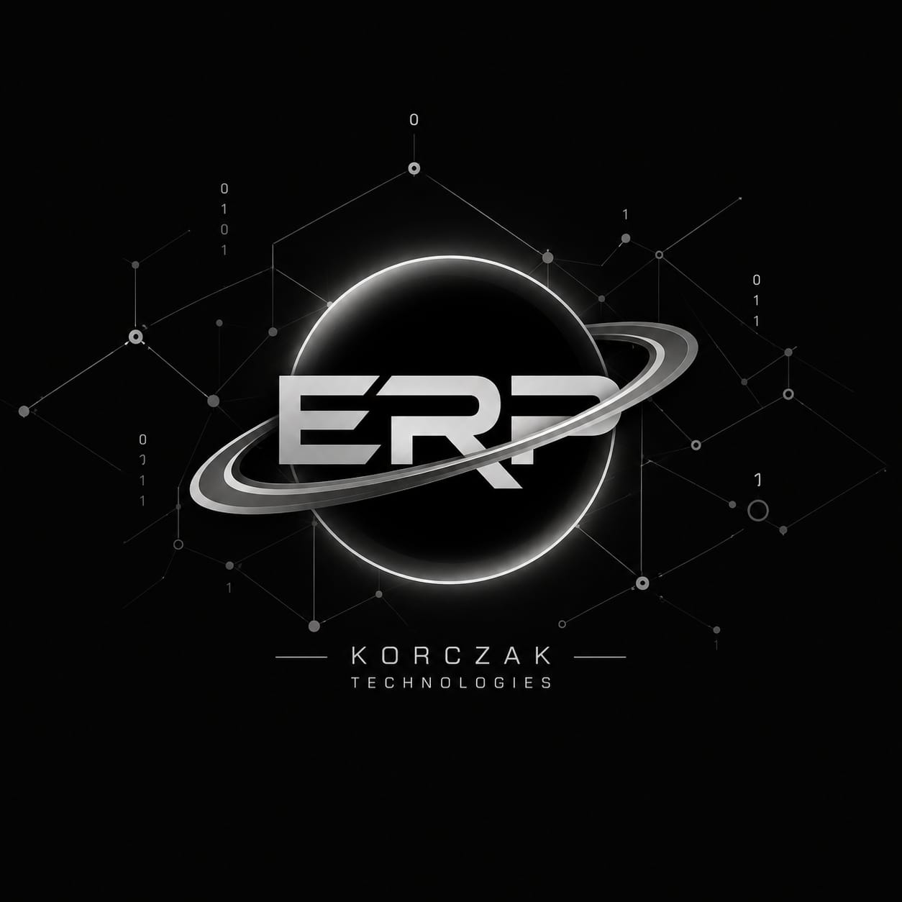
ERP
Gestão empresarial e processos administrativos.
Acessar →Uma arquitetura modular para conectar gestão, operação, automação, dados e processos de empresas.

Gestão empresarial e processos administrativos.
Acessar →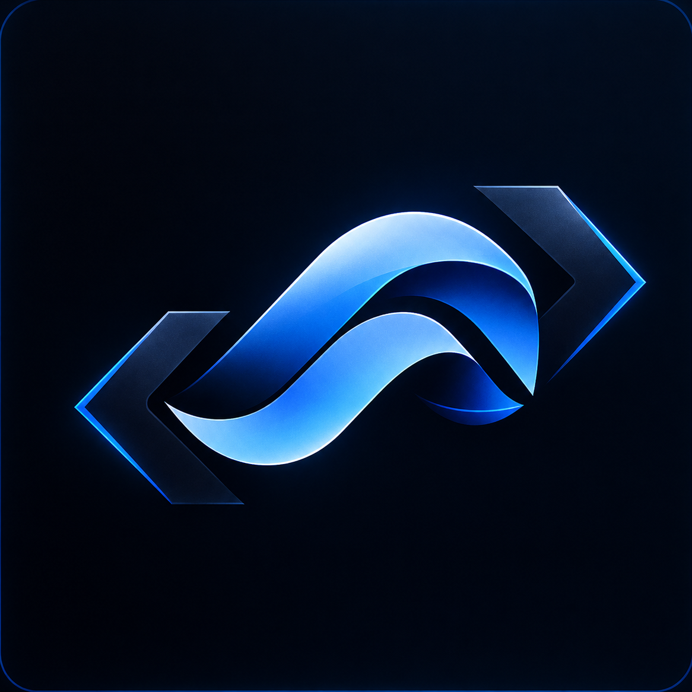
Automação e orquestração de processos.
Acessar →
Operação e produção.
Acessar →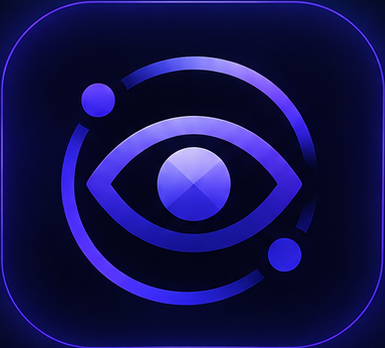
Gestão visual e computação visual.
Acessar →
Integrações e contratos entre sistemas.
Acessar →Operação móvel.
Acessar →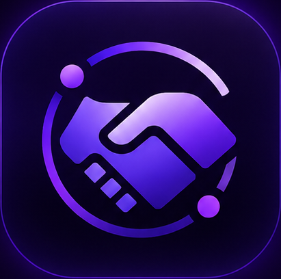
Relacionamento com clientes e gestão comercial.
Acessar →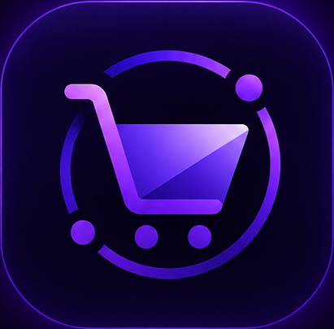
Processos e operações de vendas.
Acessar →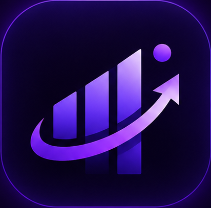
Operações de comércio e canais digitais.
Acessar →
Gestão da cadeia de suprimentos.
Acessar →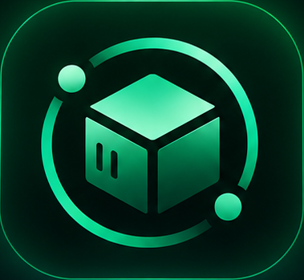
Gestão e controle de estoque.
Acessar →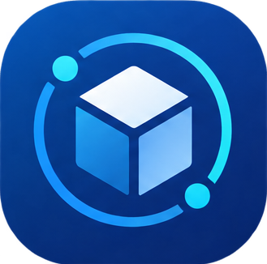
Operações logísticas e movimentação.
Acessar →
Gestão da qualidade e conformidade.
Acessar →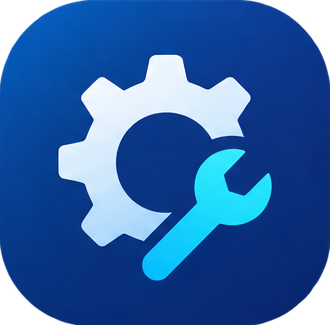
Manutenção e confiabilidade operacional.
Acessar →
Gestão de pessoas e organização.
Acessar →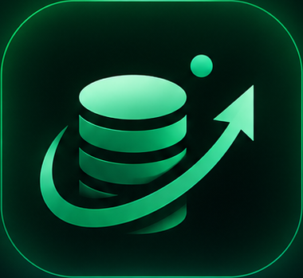
Gestão financeira e controles.
Acessar →
Processos fiscais e obrigações.
Acessar →
Indicadores e inteligência de negócios.
Acessar →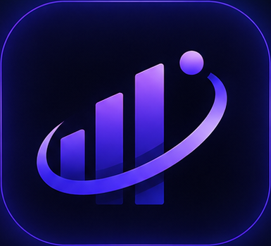
Dados, análises e apoio à decisão.
Acessar →
Documentos, organização e rastreabilidade.
Acessar →
Auditoria, histórico e rastreabilidade.
Acessar →O KOS é apresentado como plataforma B2B modular. Integrações futuras dependem de contratos e módulos específicos; esta página não presume integrações já disponíveis.